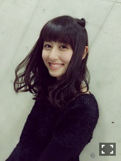
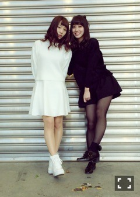
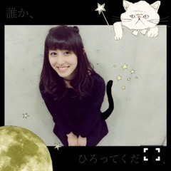
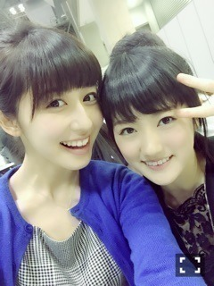

| 2015/02 01 Sun | 斎藤ちはる 黒猫です。J-WAVE(´> ∀<｀)ゝ |
ちはるーむへようこそ\♡/

昨日は握手会でした(﹡ˆ ˆ﹡)
楽しかった...♡
また来てくれると嬉しいなあ♪
4部♡
4部は、黒猫のイメージ♪
全身黒だよ！ねこみみもしたよ！えへ
実はにゃんポーズもしたんだけどねー
恥ずかしいからモバメでしか送らないっ//
そしたらねー？
愛未とシンメトリーだったの\( ˆoˆ )/

合わせてないのに、黒と白！
凄いよね！
なんか嬉しかった。ふふ。笑
作ってもらった！川後に！

川後先生の加工技術に驚いたヽ(；；)丿
すごいよーすごいよー♡
感謝っ
5部♡
清楚なお嬢さん風(﹡ˆ ˆ﹡)
dazzlinのワンピースだよ！
髪の毛もアップにして、4部とは違ってスッキリさせたよ〜♪
アップスタイルも好評で嬉しかったな♡
そうそう！
4部と5部の間に、ひなちまの生誕祭があったんだけど、手紙を読みました♪
川後の手紙を代読。笑
なんで帰ったの！！笑
そういうところが、川後です。流石です。笑

ひなちまは素敵な子です。
ほんとに！！
すっごくすっごく大好きなの(﹡ˆ ˆ﹡)
私のことを「乃木坂で一番憧れの女性」って言ってくれたヽ(；；)丿
考え方が好きだってヽ(；；)丿
ああ、ひなちまヽ(；；)丿らぶヽ(；；)丿
学業との両立も頑張っているひなちま、
性格が物凄くいいひなちま、
スタイルが物凄くいいひなちま、
甘えた声で「ち〜♡」って呼ぶひなちま、
本当だいすき！！
お誕生日おめでとう(﹡ˆ ˆ﹡)
2月2日
、明日の
「J-WAVE SPECIAL SUPER BOWL RADIO XLIX」
に少しですがコメントさせていただいています(﹡ˆ ˆ﹡)
アメフト関係のお仕事、すっごくすっごく嬉しかった\( ˆ ˆ )/♡
現役のフットボーラーの父の影響で
小さい頃から大好きなアメフト。
それがお仕事に繋がるってとても嬉しいことです(> <)♪
またアメフトのお仕事したいな〜って
物凄く感じました！！
オードリーさんと共演するのが密かな夢なので！
共演できるくらいまで私も頑張らないとっ( ･̀･́ )
明日の試合、私も注目してます。楽しみ！！
♪
のぎ天、見た人( ∩ˇωˇ∩)？
ばいるんっ
るんるんっ
ちはるんっ
(´>∀<｀)ゝ